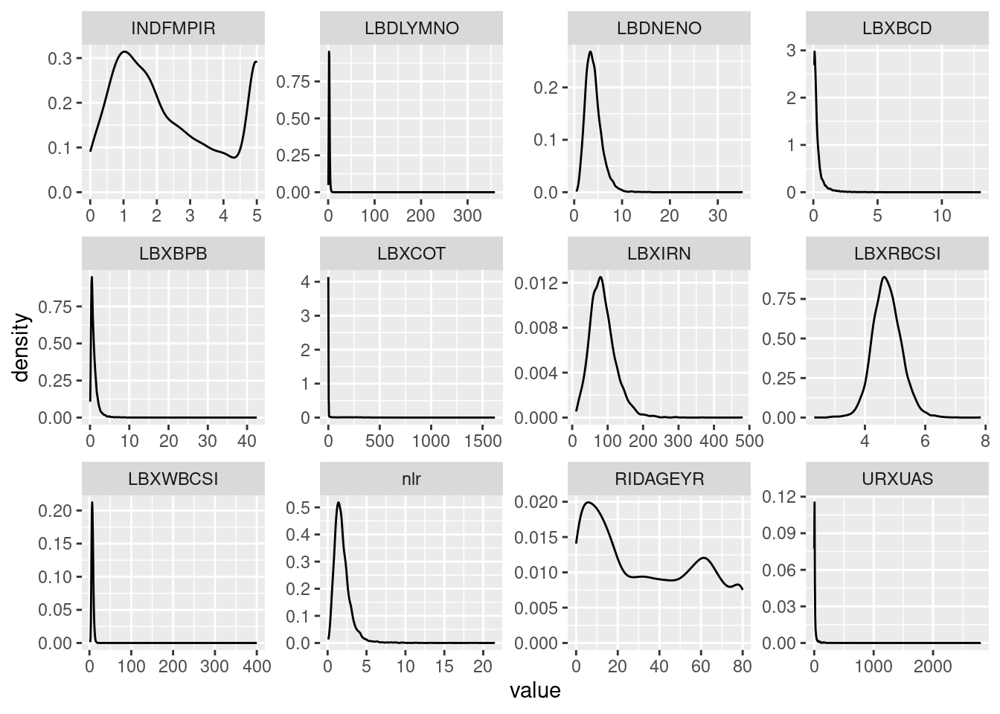
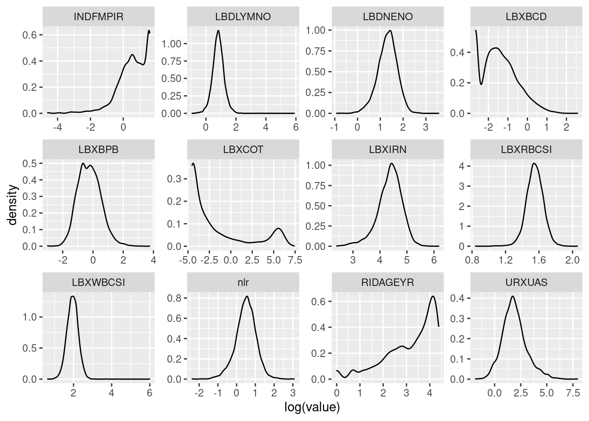
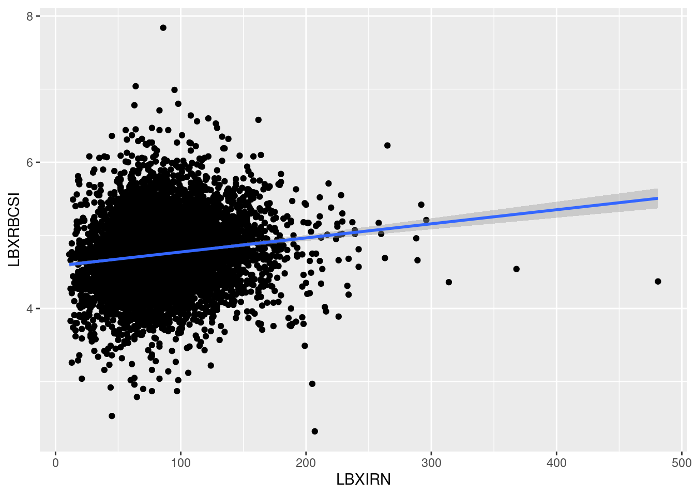
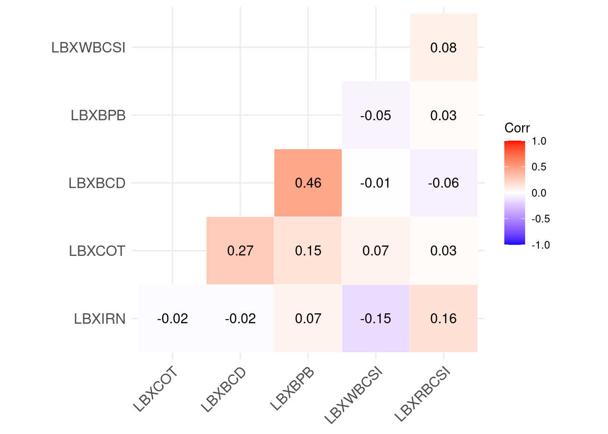
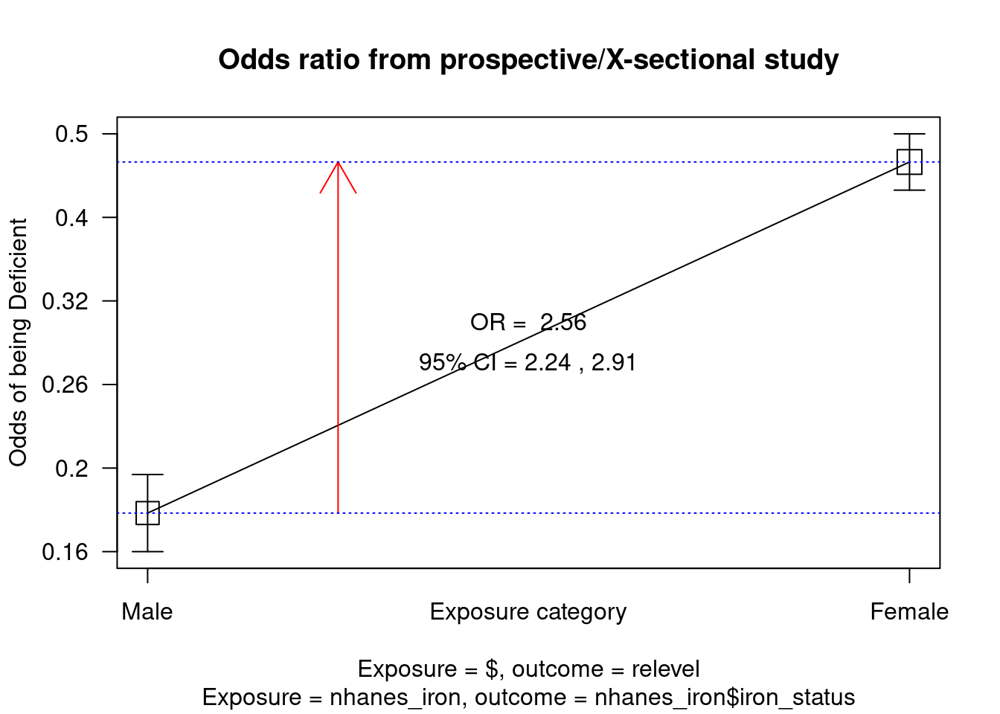
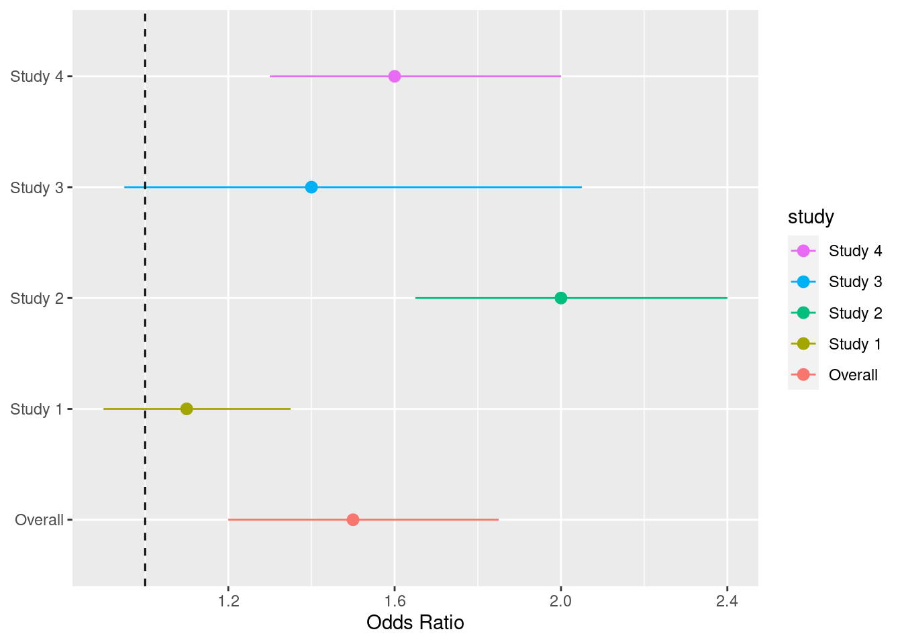

# Load these packages for the current session
library(here)
library(ggcorrplot)
library(gtsummary)
library(epiDisplay)
library(sjlabelled)
library(tidyverse)EPID674 Epidemiologic Data Analysis using R
Hypothesis Testing in R
Install new packages
Load packages
Load data
# Check the file path
here("nhanes_class_dataset.rda")[1] "/cloud/project/nhanes_class_dataset.rda"# Load the saved R data
load(here("nhanes_class_dataset.rda"), verbose = TRUE)Loading objects:
nhanesHypothesis testing in R
Before you begin: Remember to check your distributions/assumptions
# Select the continuous variables to check and transform dataset to long form
longer_data <- nhanes %>%
select(RIDAGEYR,
INDFMPIR,
LBDLYMNO,
LBDNENO,
LBXRBCSI,
LBXWBCSI,
nlr,
LBXBCD,
LBXBPB,
LBXCOT,
LBXIRN,
URXUAS) %>%
remove_all_labels() %>%
pivot_longer(everything(), names_to = "variable", values_to = "value")
head(longer_data)# A tibble: 6 × 2
variable value
<chr> <dbl>
1 RIDAGEYR 2
2 INDFMPIR 5
3 LBDLYMNO NA
4 LBDNENO NA
5 LBXRBCSI NA
6 LBXWBCSI NA# Plot the distributions of the raw values
longer_data %>%
ggplot(aes(x = value)) +
geom_density() +
facet_wrap(~ variable, scales = "free")Warning: Removed 25934 rows containing non-finite values (`stat_density()`).
# Are any of these distributions normal?
# Plot the distributions of the log transformed values
longer_data %>%
ggplot(aes(x = log(value))) +
geom_density() +
facet_wrap(~ variable, scales = "free")Warning: Removed 26382 rows containing non-finite values (`stat_density()`).
# Are any of the log transformed distributions normal?
# Be sure to use your understanding of the distributions when deciding between parametric and non-parametric testsCorrelation tests: Comparing two continuous variables
# What do you expect?
ggplot(nhanes, aes(x = LBXIRN,
y = LBXRBCSI)) +
geom_point() +
geom_smooth(method = lm)Don't know how to automatically pick scale for object of type
<labelled/integer>. Defaulting to continuous.
`geom_smooth()` using formula = 'y ~ x'Warning: Removed 3335 rows containing non-finite values (`stat_smooth()`).Warning: Removed 3335 rows containing missing values (`geom_point()`).
# Correlation test between two continuous variables (default method is Pearson, a parametric test)
cor.test(nhanes$LBXIRN, nhanes$LBXRBCSI) # What do you get?
Pearson's product-moment correlation
data: nhanes$LBXIRN and nhanes$LBXRBCSI
t = 10.89, df = 5917, p-value < 2.2e-16
alternative hypothesis: true correlation is not equal to 0
95 percent confidence interval:
0.1151102 0.1650627
sample estimates:
cor
0.1401757 # Do they match?
# Can request spearman, a non-parametric test for non-normally distributed variables
cor.test(nhanes$RIDAGEYR, nhanes$INDFMPIR, method = "spearman")Warning in cor.test.default(nhanes$RIDAGEYR, nhanes$INDFMPIR, method =
"spearman"): Cannot compute exact p-value with ties
Spearman's rank correlation rho
data: nhanes$RIDAGEYR and nhanes$INDFMPIR
S = 7.2895e+10, p-value < 2.2e-16
alternative hypothesis: true rho is not equal to 0
sample estimates:
rho
0.1530888 Correlation matrix
# Select the columns of interest
nhanes_chems <- nhanes %>%
select(LBXIRN,
LBXCOT,
LBXBCD,
LBXBPB,
LBXWBCSI,
LBXRBCSI)
# Calculate the correlations, use spearman for non-normally distributed variables
chem_correlations <- cor(nhanes_chems,
use = "pairwise.complete.obs",
method = "spearman")
# View the correlation matrix
chem_correlations LBXIRN LBXCOT LBXBCD LBXBPB LBXWBCSI
LBXIRN 1.00000000 -0.01926272 -0.02056100 0.06665300 -0.15056021
LBXCOT -0.01926272 1.00000000 0.27129009 0.14709065 0.07444648
LBXBCD -0.02056100 0.27129009 1.00000000 0.46261731 -0.01119554
LBXBPB 0.06665300 0.14709065 0.46261731 1.00000000 -0.05077459
LBXWBCSI -0.15056021 0.07444648 -0.01119554 -0.05077459 1.00000000
LBXRBCSI 0.15953053 0.02781844 -0.06204764 0.02625293 0.08120104
LBXRBCSI
LBXIRN 0.15953053
LBXCOT 0.02781844
LBXBCD -0.06204764
LBXBPB 0.02625293
LBXWBCSI 0.08120104
LBXRBCSI 1.00000000# Plot the correlations with ggcorrplot
ggcorrplot(chem_correlations,
type = "lower",
outline.col = "white",
lab = TRUE)
Check your understanding
What is the relationship between urinary arsenic (URXUAS) and neutrophil/lymphocyte ratio (nlr)? * Make a new code chunk * What type of variables are they? What are their distributions? * What is the appropriate test to run? * Run the test and interpret the output * Does this match your expectations?
Comparing 1 categorical and 1 continuous variable
T-test: Independent variable dichotomous, dependent variable continuous, parametric test
# The relationship between sex and iron concentration:
# What do you expect?
# Calculate mean of iron concentration by sex
nhanes %>%
group_by(sex) %>%
summarise(mean_iron = mean(LBXIRN, na.rm = TRUE)) %>%
ungroup()# A tibble: 2 × 2
sex mean_iron
<fct> <dbl>
1 Male 93.8
2 Female 79.1# T-test of iron and sex: Parametric test with normally distributed dependent variable
t.test(nhanes$LBXIRN ~ nhanes$sex) #What do you get?
Welch Two Sample t-test
data: nhanes$LBXIRN by nhanes$sex
t = 15.678, df = 5901.7, p-value < 2.2e-16
alternative hypothesis: true difference in means between group Male and group Female is not equal to 0
95 percent confidence interval:
12.83508 16.50353
sample estimates:
mean in group Male mean in group Female
93.8048 79.1355 # Do they match?
# Calculated within a bivariate table
nhanes %>%
select(sex,
LBXIRN) %>%
tbl_summary(by = sex, #stratify by sex
statistic = all_continuous() ~ "{mean} ({sd})",
missing_text = "Missing (n)"
) %>%
add_p(LBXIRN ~ "t.test") %>%
modify_header(label ~ "**Variable**") %>%
bold_labels()| Variable | Male, N = 4,5571 | Female, N = 4,6971 | p-value2 |
|---|---|---|---|
| Iron frozen, Serum (ug/dL) | 94 (36) | 79 (36) | <0.001 |
| Missing (n) | 1,683 | 1,649 | |
| 1 Mean (SD) | |||
| 2 Welch Two Sample t-test | |||
Working with a non-normally distributed variable
T-test and Wilcoxon test: Independent variable dichotomous, dependent variable continuous
# The relationship between sex and blood Pb
nhanes %>%
group_by(sex) %>%
summarise(mean_lead = mean(LBXBPB, na.rm = TRUE),
mean_log_lead = mean(log(LBXBPB), na.rm = TRUE)) %>%
ungroup()# A tibble: 2 × 3
sex mean_lead mean_log_lead
<fct> <dbl> <dbl>
1 Male 1.25 -0.100
2 Female 0.924 -0.374# T-test: Be sure to log transform blood Pb variable before calculating parametric test statistics
t.test(log(nhanes$LBXBPB) ~ nhanes$sex)
Welch Two Sample t-test
data: log(nhanes$LBXBPB) by nhanes$sex
t = 15.17, df = 6837, p-value < 2.2e-16
alternative hypothesis: true difference in means between group Male and group Female is not equal to 0
95 percent confidence interval:
0.2383423 0.3090824
sample estimates:
mean in group Male mean in group Female
-0.1004491 -0.3741614 # Wilcoxon test: Non parametric test, no need to transform variables
wilcox.test(nhanes$LBXBPB ~ nhanes$sex)
Wilcoxon rank sum test with continuity correction
data: nhanes$LBXBPB by nhanes$sex
W = 7127720, p-value < 2.2e-16
alternative hypothesis: true location shift is not equal to 0ANOVA: Independent variable 3+ categories, dependent variable continuous, parametric test
# The relationship between age and blood Pb:
nhanes %>%
group_by(age_groups) %>%
summarise(mean_lead = mean(LBXBPB, na.rm = TRUE),
mean_log_lead = mean(log(LBXBPB), na.rm = TRUE)) %>%
ungroup()# A tibble: 5 × 3
age_groups mean_lead mean_log_lead
<fct> <dbl> <dbl>
1 [0,16] 0.566 -0.760
2 (16,32] 0.738 -0.601
3 (32,48] 1.03 -0.277
4 (48,64] 1.45 0.143
5 (64,80] 1.64 0.292# ANOVA test
aov(log(nhanes$LBXBPB) ~ nhanes$age_groups)Call:
aov(formula = log(nhanes$LBXBPB) ~ nhanes$age_groups)
Terms:
nhanes$age_groups Residuals
Sum of Squares 1177.830 2798.378
Deg. of Freedom 4 6879
Residual standard error: 0.6378089
Estimated effects may be unbalanced
2370 observations deleted due to missingnessanova(aov(log(nhanes$LBXBPB) ~ nhanes$age_groups))Analysis of Variance Table
Response: log(nhanes$LBXBPB)
Df Sum Sq Mean Sq F value Pr(>F)
nhanes$age_groups 4 1177.8 294.457 723.84 < 2.2e-16 ***
Residuals 6879 2798.4 0.407
---
Signif. codes: 0 '***' 0.001 '**' 0.01 '*' 0.05 '.' 0.1 ' ' 1# How do we interpret the p-value from an ANOVA test?
# Pairwise t-test
pairwise.t.test(log(nhanes$LBXBPB), nhanes$age_groups)
Pairwise comparisons using t tests with pooled SD
data: log(nhanes$LBXBPB) and nhanes$age_groups
[0,16] (16,32] (32,48] (48,64]
(16,32] 9e-11 - - -
(32,48] <2e-16 <2e-16 - -
(48,64] <2e-16 <2e-16 <2e-16 -
(64,80] <2e-16 <2e-16 <2e-16 5e-10
P value adjustment method: holm # Pairwise t-test with bonferroni adjustment
pairwise.t.test(log(nhanes$LBXBPB), nhanes$age_groups,
p.adj = "bonferroni")
Pairwise comparisons using t tests with pooled SD
data: log(nhanes$LBXBPB) and nhanes$age_groups
[0,16] (16,32] (32,48] (48,64]
(16,32] 4.5e-10 - - -
(32,48] < 2e-16 < 2e-16 - -
(48,64] < 2e-16 < 2e-16 < 2e-16 -
(64,80] < 2e-16 < 2e-16 < 2e-16 5.0e-09
P value adjustment method: bonferroni Comparing two categorical variables
Chi-square test: Parametric test
# The relationship between sex and education:
table(nhanes$sex, nhanes$education)
Less than high school Less than 5th grade High school or GED
Male 1050 570 745
Female 1005 572 735
More than high school
Male 1480
Female 1705# Chi-square test
chisq.test(nhanes$sex, nhanes$education)
Pearson's Chi-squared test
data: nhanes$sex and nhanes$education
X-squared = 13.195, df = 3, p-value = 0.004234# Calculated within a bivariate table
nhanes %>%
select(sex,
education) %>%
tbl_summary(by = sex, #stratify by sex
digits = list(all_categorical() ~ c(0, 1)),
missing_text = "Missing (n)",
label = education ~ "Educational attainment"
) %>%
add_p() %>%
modify_header(label ~ "**Variable**") %>%
bold_labels()| Variable | Male, N = 4,5571 | Female, N = 4,6971 | p-value2 |
|---|---|---|---|
| Educational attainment | 0.004 | ||
| Less than high school | 1,050 (27.3%) | 1,005 (25.0%) | |
| Less than 5th grade | 570 (14.8%) | 572 (14.2%) | |
| High school or GED | 745 (19.4%) | 735 (18.3%) | |
| More than high school | 1,480 (38.5%) | 1,705 (42.4%) | |
| Missing (n) | 712 | 680 | |
| 1 n (%) | |||
| 2 Pearson's Chi-squared test | |||
Fisher’s test: Non-parametric test
# The relationship between sex and iron status:
table(nhanes$sex, nhanes$iron_status)
Deficient Excessive Normal
Male 427 91 2356
Female 949 51 2048# Fisher exact test
fisher.test(nhanes$sex, nhanes$iron_status)
Fisher's Exact Test for Count Data
data: nhanes$sex and nhanes$iron_status
p-value < 2.2e-16
alternative hypothesis: two.sided# Calculated within a bivariate table
nhanes %>%
select(sex,
iron_status) %>%
tbl_summary(by = sex, #stratify by sex
statistic = list(all_categorical() ~ "{n} ({p}%)"),
digits = all_categorical() ~ c(0,1),
missing_text = "Missing (n)"
) %>%
add_p(iron_status ~ "fisher.test") %>%
modify_header(label ~ "**Variable**") %>%
bold_labels()| Variable | Male, N = 4,5571 | Female, N = 4,6971 | p-value2 |
|---|---|---|---|
| iron_status | <0.001 | ||
| Deficient | 427 (14.9%) | 949 (31.1%) | |
| Excessive | 91 (3.2%) | 51 (1.7%) | |
| Normal | 2,356 (82.0%) | 2,048 (67.2%) | |
| Missing (n) | 1,683 | 1,649 | |
| 1 n (%) | |||
| 2 Fisher's exact test | |||
Check your understanding
What is the relationship between education (education) and poverty income ratio (INDFMPIR)? * Make a new code chunk * What type of variables are they? What are their distributions? * What is the appropriate test to run? * Run the test and interpret the output * Does this match your expectations?
Calculate odds ratios from 2x2 table
# Simplify iron into two categories
nhanes_iron <- nhanes %>%
filter(!iron_status == "Excessive") %>%
droplevels()
table(nhanes_iron$iron_status)
Deficient Normal
1376 4404 levels(nhanes$iron_status)[1] "Deficient" "Excessive" "Normal" levels(nhanes_iron$iron_status)[1] "Deficient" "Normal" # The relationship between iron status (normal and deficient) and sex
# Make 2x2 table
nhanes_iron %>%
select(sex,
iron_status) %>%
tbl_summary(by = sex,
digits = all_categorical() ~ c(0,1)
) %>%
modify_header(label ~ "**Variable**") %>%
bold_labels()| Variable | Male, N = 2,7831 | Female, N = 2,9971 |
|---|---|---|
| iron_status | ||
| Deficient | 427 (15.3%) | 949 (31.7%) |
| Normal | 2,356 (84.7%) | 2,048 (68.3%) |
| 1 n (%) | ||
# Calculate odds ratio
cc(outcome = relevel(nhanes_iron$iron_status, ref= "Normal"),
exposure = nhanes_iron$sex)
nhanes_iron$sex
relevel(nhanes_iron$iron_status, ref = "Normal") Male Female Total
Normal 2356 2048 4404
Deficient 427 949 1376
Total 2783 2997 5780
OR = 2.56
95% CI = 2.25, 2.91
Chi-squared = 211.93, 1 d.f., P value = 0
Fisher's exact test (2-sided) P value = 0 Create fake data for graphing odds ratio results
## Assuming that you obtained ORs and want to compare the results to what was found in other studies.
## Let's create a data frame for these ORs and 95% CIs.
study <- c("Overall", "Study 1", "Study 2", "Study 3", "Study 4")
or <- c(1.5, 1.1, 2.0, 1.4, 1.6)
or_lower_lim <- c(1.2, 0.9, 1.65, 0.95, 1.3)
or_upper_lim <- c(1.85, 1.35, 2.4, 2.05, 2.0)
results <- data.frame(study, or, or_lower_lim, or_upper_lim)
results$study <- factor(results$study,
levels = results$study)Plot odds ratios with a forest plot
# Forest plot, ggplot2 package
ggplot(results,
aes(x = or,
y = study,
xmin = or_lower_lim,
xmax = or_upper_lim,
color = study)) +
geom_pointrange() +
labs(x = "Odds Ratio", y = NULL) +
geom_vline(xintercept = 1,
linetype = 2) +
guides(color = guide_legend(reverse = TRUE))